Productos Vivero Floowers
Todo
Plantas de Interior
Plantas De Exterior
Suculentas
Germinacion
Herramientas
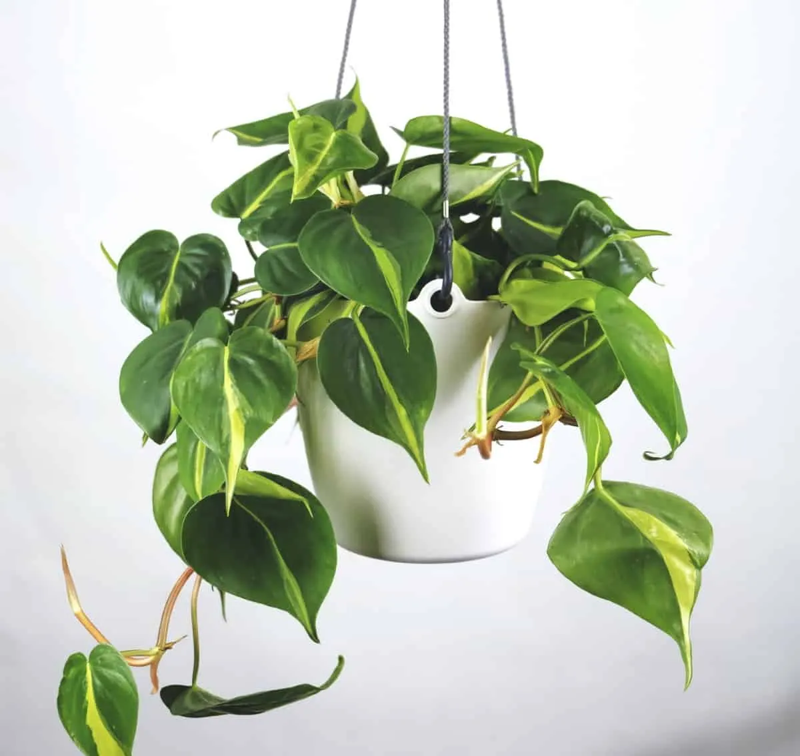
Potos
(Epipremnum aureum):
Es una planta trepadora que se adapta muy bien a las condiciones de interior y no requiere de cuidados muy especiales. Sus hojas son verdes con tonos amarillos y blancos. Se recomienda ubicarla en un lugar con luz indirecta y cuidarla moderadamente.
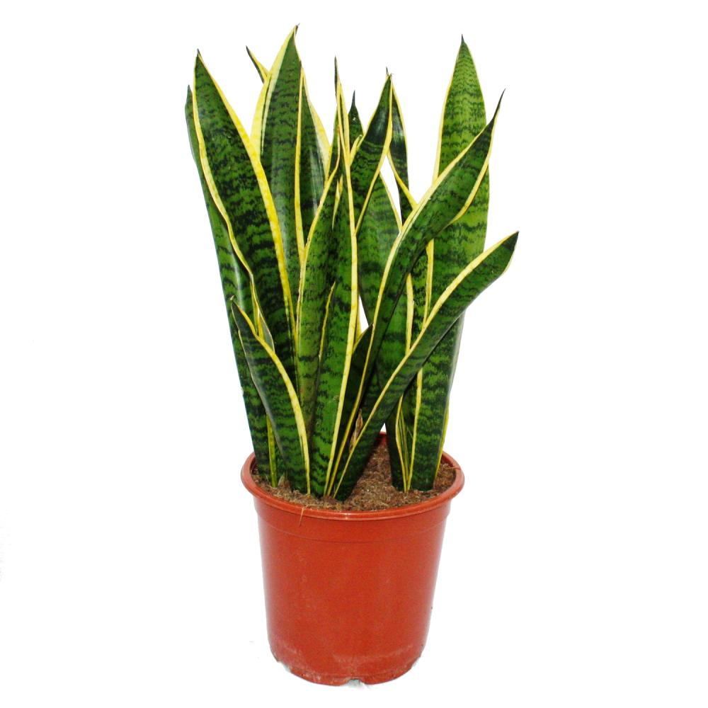
Sansevieria
(Sansevieria trifasciata):
También conocida como "lengua de suegra", de bajo mantenimiento. Sus hojas son verticales y tienen un patrón de rayas verdes y amarillas. Se recomienda ubicarla en un lugar con luz indirecta y cuidarla muy poco, ya que es muy resistente a la sequía.
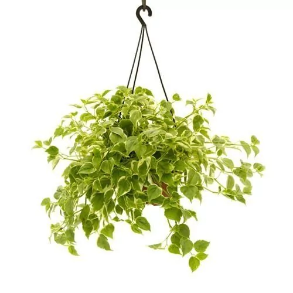
Peperomia
(Peperomia spp.):
Es una planta pequeña y compacta que se adapta muy bien a las condiciones de interior. Sus hojas son redondas y de color verde oscuro. Se recomienda ubicarla en un lugar con luz indirecta y cuidarla moderadamente.
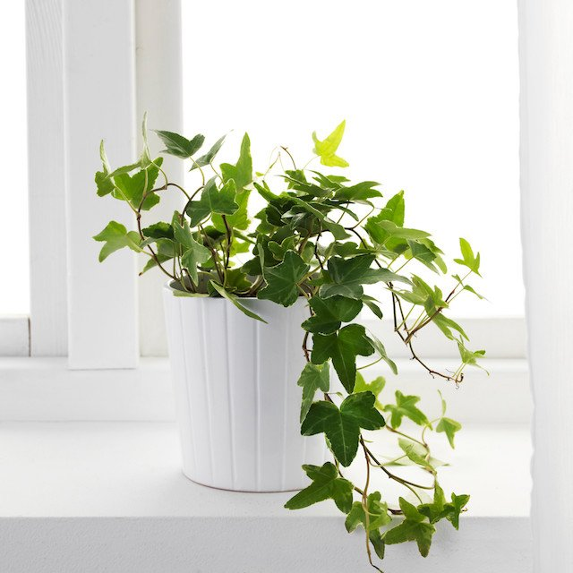
Hiedra inglesa
(Hedera helix):
Es una planta trepadora con hojas verdes y pequeñas. Se adapta muy bien a las condiciones de interior y es ideal para decorar paredes y techos. Se recomienda ubicarla en un lugar con luz indirecta y cuidarla moderadamente.
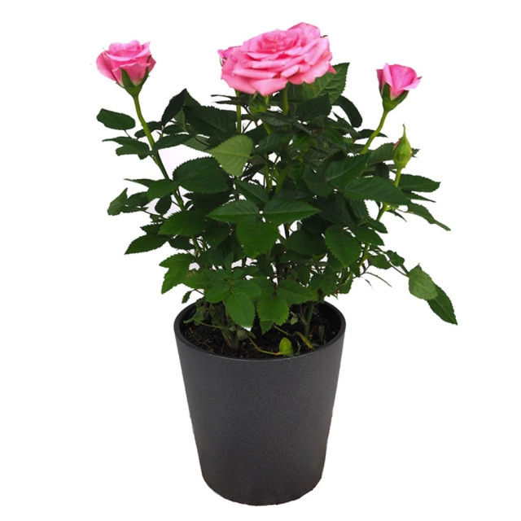
Rosal
(Rosa spp.):
Es un arbusto que produce flores de distintos colores y tamaño. Requiere de una exposición directa al sol y de un riego regular para mantener la tierra húmeda.
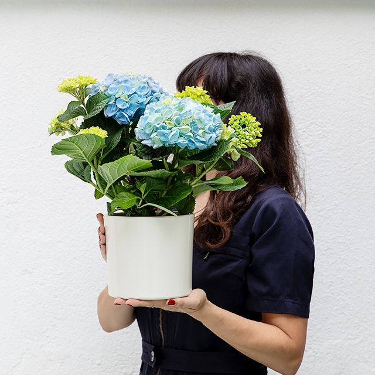
Hortensia
(Hydrangea spp.):
Es un arbusto que produce flores grandes y vistosas en tonos azules, rosados o blancos. Requiere de un lugar con sombra y un riego regular para mantener la tierra húmeda.
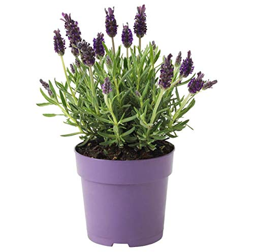
Lavanda
(Lavandula spp.):
Es una planta aromática que produce flores de color violeta. Requiere de una exposición directa al sol y un riego moderado, impidiendo que la tierra se seque por completo.
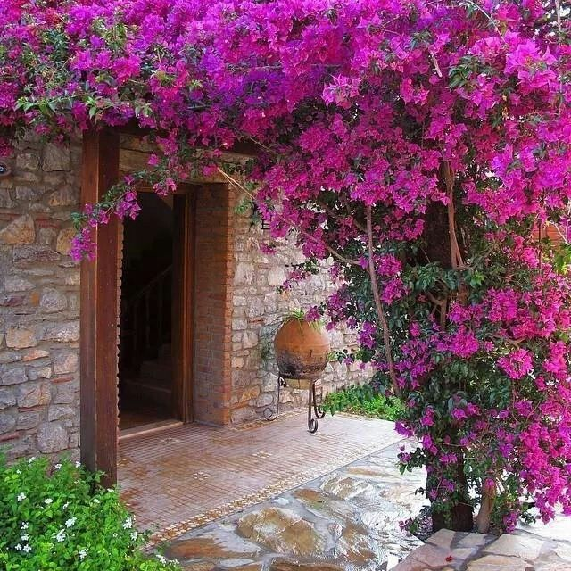
Buganvilla
(Bougainvillea spp.):
Es una trepadora que produce flores de distintos colores como el rosa, el rojo o el blanco. Requiere de una exposición directa al sol y de un riego moderado, impidiendo que la tierra se encharque.
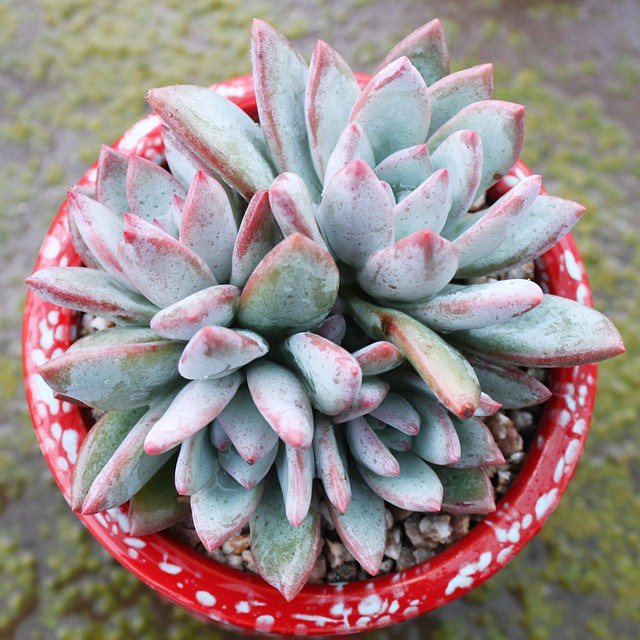
Echeveria
(Echeveria spp.):
Es una suculenta con hojas carnosas en forma de roseta y flores en tonos rosa o rojo. Requiere de una exposición directa al sol y un riego moderado, impidiendo que la tierra se encharque.
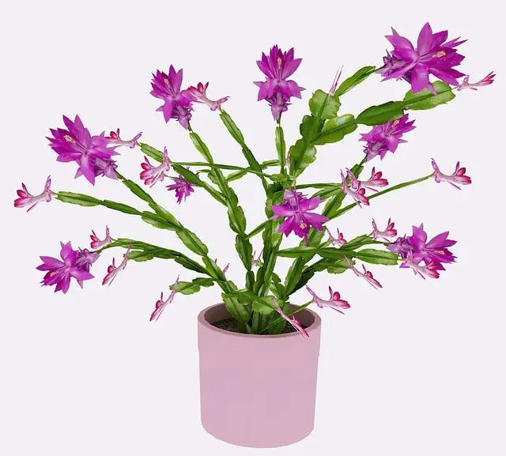
Cactus de Navidad
(Schlumbergera spp.):
Es una suculenta que produce flores en tonos rosados rojos. Requiere de una exposición a la luz indirecta y un riego moderado, impidiendo que la tierra se seque por completo.
Crasa de jade
(Crassula ovata):
Es una suculenta con hojas ovaladas y verdes. Requiere de una exposición directa al sol y un riego moderado, impidiendo que la tierra se encharque.
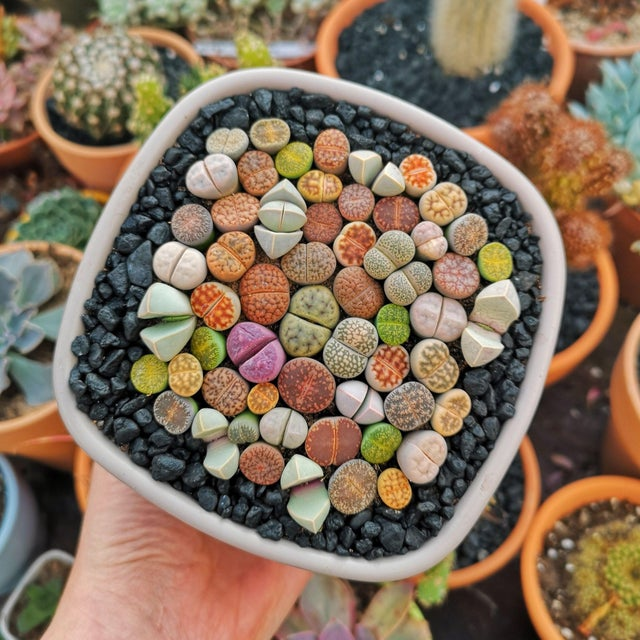
Lithops son suculentas pequeñas y redondas que parecen piedras. Necesitan mucha luz solar directa y un suelo bien drenado. Es importante guardarlas con moderación, dejando que la tierra se seque por completo antes de volver a guardar. Se adaptan a una amplia gama de temperaturas.
Semillas de tomate: los tomates son una de las plantas más populares en la huerta y son fáciles de cultivar a partir de semillas. Puedes usar para hacer salsas, conservas, ensaladas y más.
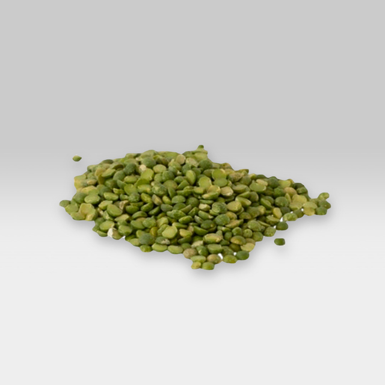
Semillas de calabaza: las calabazas son una planta resistente y fácil de cultivar. Sus semillas se pueden usar para hacer pan de calabaza, salsas y más.
Semillas de zanahoria: las zanahorias son una verdura popular en la huerta y son fáciles de cultivar a partir de semillas. Puedes usarlas en ensaladas, guisos, jugos y más.
Semillas de lechuga: las lechugas son plantas fáciles de cultivar y rápidas de crecer. Puedes usarlas para ensaladas, hamburguesas, tacos y más.
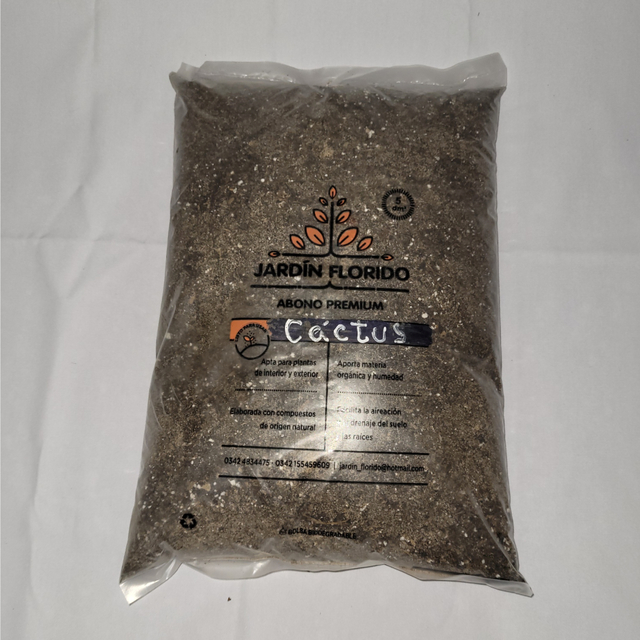
Tierra para cactus: esta tierra está hecha con arena y materia orgánica para crear un suelo bien drenado. Es ideal para cactus y suculentas.
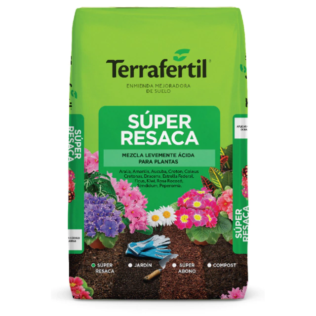
Tierra para orquídeas: esta tierra está hecha de cortezas de árboles y esponjas de esfagno para crear un suelo aireado y drenado. Es ideal para orquídeas.
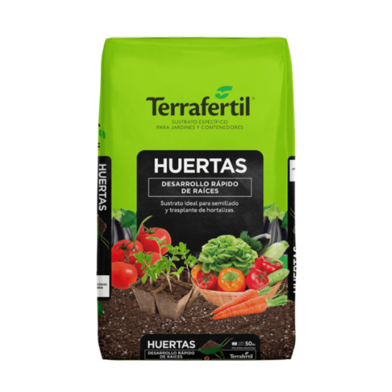
Tierra para huerta: esta tierra está enriquecida con compost y nutrientes para ayudar a las plantas a crecer saludables y fuertes. Es ideal para cultivar verduras en la huerta.
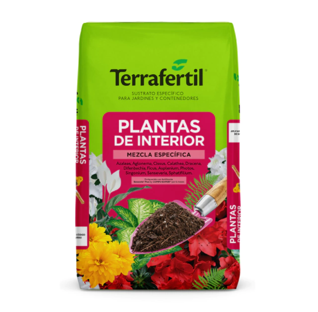
Tierra para plantas de interior: esta tierra está hecha con una mezcla de turba, vermiculita y perlita para crear un suelo bien drenado y aireado. Es ideal para plantas de interior como las suculentas, la planta araña y la hiedra.
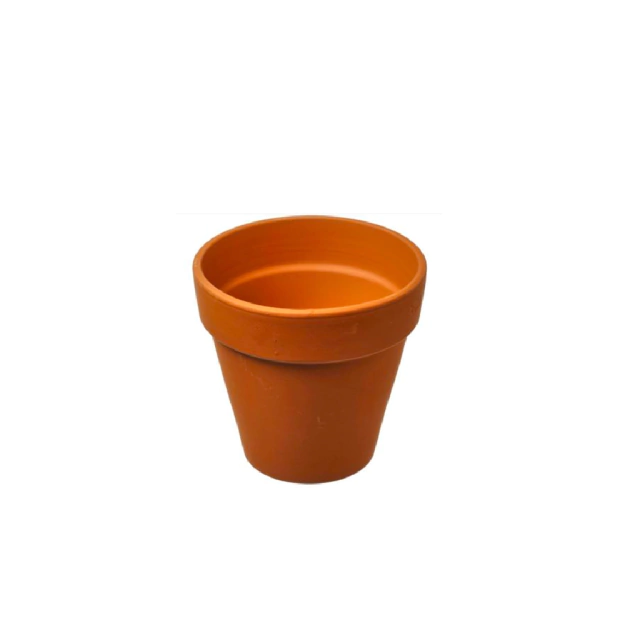
Maceta de barro: estas macetas son ideales para plantas que necesitan un suelo bien drenado. Son porosas, lo que ayuda a mantener el suelo aireado.
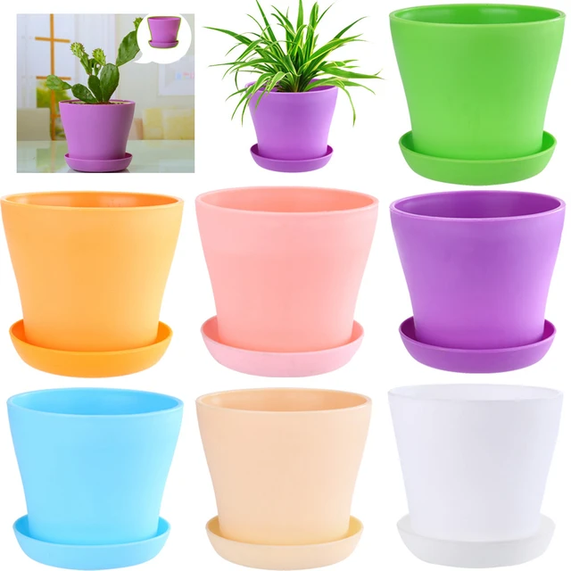
Maceta de plastico: estas macetas son ligeras, economicas y duraderas. Son ideales para plantas que necesitan una tierra humeda.
Maceta de fibra de coco: estas macetas son resistentes y biodegradables. Son ideales para plantas que necesitan una tierra humeda y bien drenada.
Maceta de cerámica: estas macetas son resistentes y atractivas, y pueden venir en una variedad de colores y diseños. Son ideales para plantas que necesitan una tierra humeda y bien drenada.
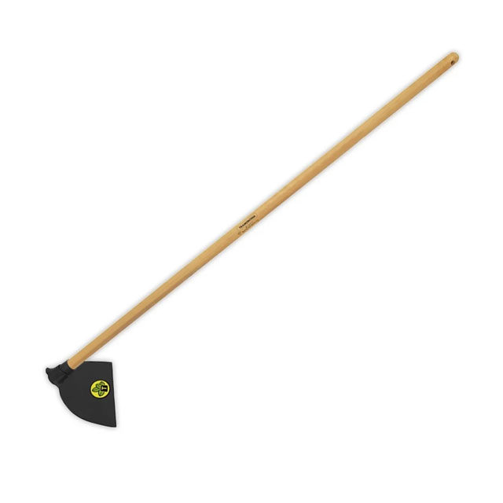
Azadas
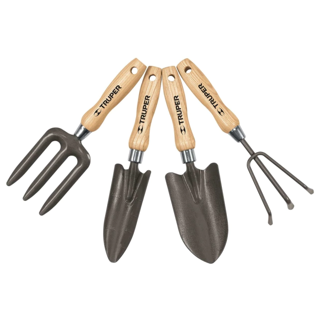
Kits Huertas
Kits de tijeras
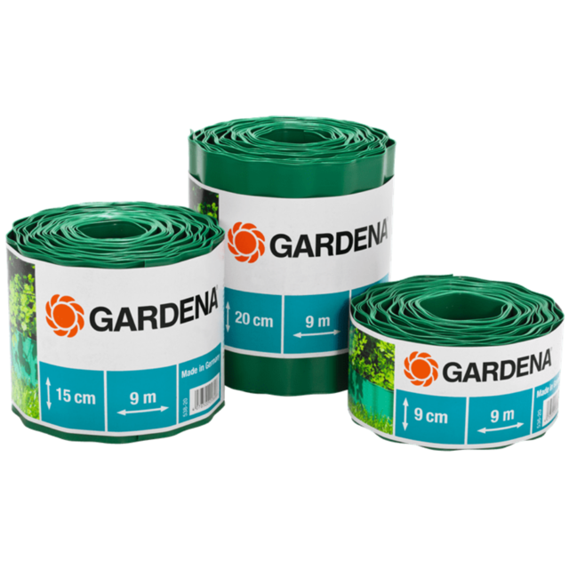
Productos Gardena
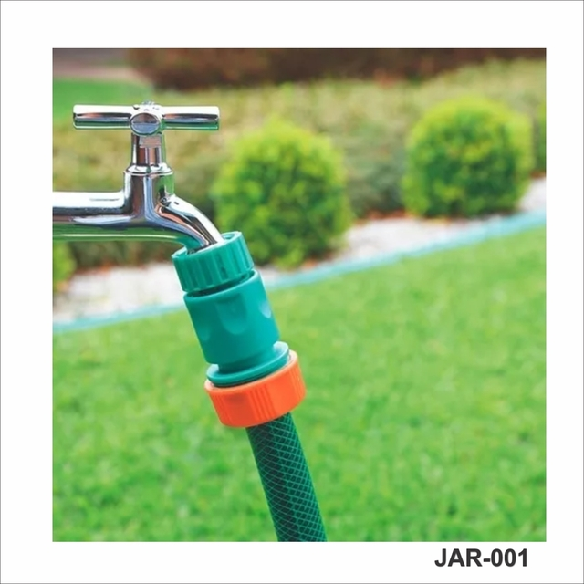
Variedades en Mangueras
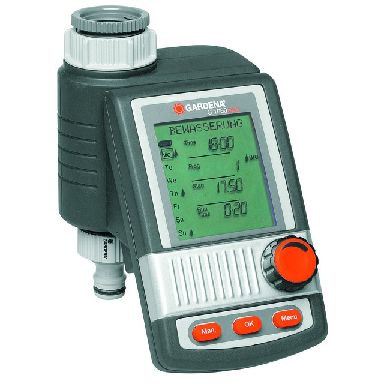
Regadores Por Goteo